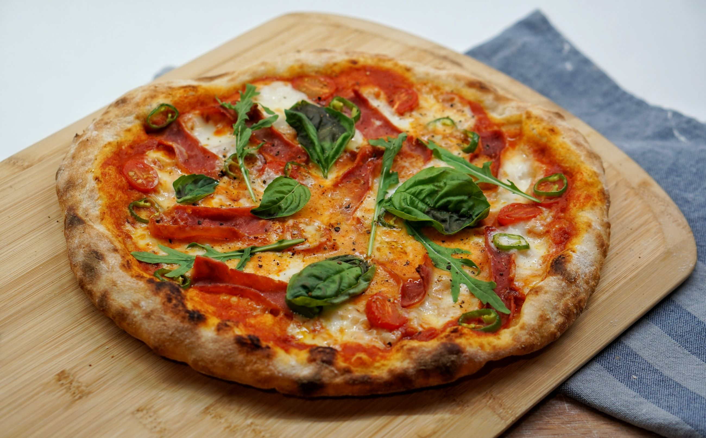

akciós pizza
capricosa, 1990 ft

páros ajánlat
második pizza után ingyen 0,5 literes üdítő

Júniis 6-án, pünkösd hétfőn is várjuk vendégeinket személyesen és az online térben. Ünnepeljenek együtt a családdal kedvenc pizzájuk társaságában.
Május első hetében munkálatok miatt a személyes kiszolgálás szünetel. Online és a telefonvonal másik végén továbbra is várjuk rendeléseiket.
Tájékoztatjuk kedves vendégeinket, hogy elhagyott tárgyaikat 1 hónapig megőrizzük raktárunkban. Nyitvatartási időn belül tulajdonosuk bármikor átveheti. Az idő lejártával gyermekotthonoknak adjuk tovább a gazdátlan tárgyakat.
Örömmel adjuk hírül, hogy fél év kemény munka után április elején megnyitott az üzletünk Budapesten, a VI. kerületben. Gyertek be hozzánk, és ismerjétek meg ízeinket!
Ingyenes házhozszállítás az II. kerületben, akár 30 perc alatt. Budapest többi kerületében a szállítás 390 forint, és a kiszállítási idő is nőhet. Budapesten kívülre nem szállítunk.
5-22-22-22
Budapest,
II. kerület
Vérhalom tér
| hétfő: | 12:00 - 20:00 |
| kedd: | |
| szerda: | |
| csütörtök: | |
| péntek: | 12:00 - 22:00 |
| szombat: | |
| vasárnap: | 12:00 - 16:00 |